AudioMixerのグループごとにAudioSourceを管理し、音量を変更します。
| 項目 | 内容 |
|---|---|
| namespace | SymphonyFrameWork.System |
| 主な公開型 | AudioManager |
| メニューパス | なし |
| 設定の保存先 | Assets/Resources/SymphonyFrameWork/AudioConfig.asset |
AudioConfig.assetへAudioMixerとグループを登録すると、グループ名からAudioSourceを取得できます。
using SymphonyFrameWork.System;
using UnityEngine;
AudioSource bgm = AudioManager.GetAudioSource("BGM");
bgm.clip = bgmClip;
bgm.Play();
AudioManager.VolumeSliderChanged("BGM", 0.5f);AudioSourceはグループごとに必要になった時点で生成され、シーン遷移後も保持されます。音量は0〜1の比率で指定します。
GetAudioSourceで使うグループ名がAudioConfig.assetへ登録済みか確認する。VolumeSliderChangedへ渡す値はdBではなく0〜1の比率。Audioは読み取り経路の利用者（Editor WindowとMCP診断）が無いため、QueryとViewModelを持ちません。

AudioSourceHostは最初にAudioSourceを求められた時点で初めてGameObjectを生成します。 AudioMixerが未割り当てなどでAudioSourceを1つも作らない場合、GameObjectも作られません。
この文書は Assets/SymphonyFrameWork/Documentation~/Modules/AudioManager.md から生成しています。編集は正本のMarkdownへ行ってください。